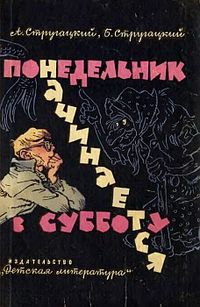

«Понедельник начинается в субботу» (1965) —
фантастическая юмористическая повесть братьев Стругацких, одно из наиболее своеобразных воплощений
советской утопии 1960-х годов, художественная реализация мечты авторов о возможности для современного
талантливого человека сосредоточиться на научном творчестве и познании тайн Вселенной.
Существенную роль в повести играют также ярко выраженные сатирические мотивы;
в ней высмеиваются приспособленцы, бюрократы и жулики от науки.